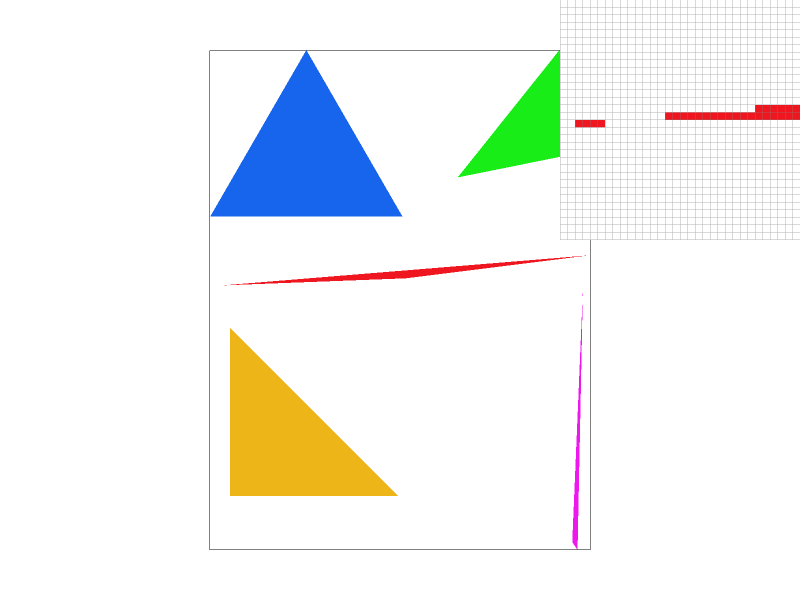

CS184/284A Spring 2025 Homework 1 Write-Up
Names: Mihir Rao
Link to webpage: (TODO) cs184.eecs.berkeley.edu/sp25
Link to GitHub repository: https://github.com/cal-cs184-student/sp25-hw1-mrao
Overview
For this homework, I implemented various aspects of the rasterization pipeline, from basic triangle drawing to more advanced techniques like supersampling, texture mapping, and mipmapping. The goal was to render images more accurately and efficiently while improving visual quality through anti-aliasing and different sampling techniques.One of the most interesting takeaways from this assignment was seeing firsthand how simple optimizations—like supersampling and bilinear filtering—can drastically improve image quality. Initially, when rendering single-color triangles, it became clear how pixelation and aliasing could negatively impact an image. Supersampling helped smooth out those rough edges, making the transitions between colors appear much more natural. Similarly, exploring texture mapping and different sampling methods showed how small choices in implementation (e.g., nearest vs. bilinear sampling) significantly affect the final image.
Another aspect I found fascinating was how barycentric coordinates allow for smooth interpolation across a triangle. Whether for color blending or texture mapping, they provide a natural way to transition from one vertex property to another. I didn't know about them before, but they turned out to be a really interesting and neat way to drastically improve a rendered image's quality.
Task 1: Drawing Single-Color Triangles
From a very high level, rasterization is the process of taking a image sample and trying to render it on a pixel screen. This process would be fairly simple for say, squares, or other rectangular shapes, but the general constraint is the width of pixels and trying to represent certain shapes. For example, drawing a triangle would require diagonal lines. But how do we know which pixels to fill? In the real world, it can be thought of as trying to travel in a diagonal on a city grid. There is no way to do that without a sequence of forward movements, with only 90 degree turnis.Speaking from a more specific perspective, we rasterize triangles by doing the following. Say we are given three points as shown above: P0, P1, and P2. For now, let’s assume the winding order is always CCW. We will address the case when it is not shortly. As shown in the diagram, we can calculate direction vectors taking us from each point Pi to Pi+1 and eventually back to home, P0. With a CCW winding order, our normal vectors are guaranteed to point inwards. This is useful because any point inside the triangle should now have a positive dot product with all 3 of the normal vectors. As the calculations show above, we can use the 3 given vertices to construct these normal vectors and then dot it with our test point vector Pt. As the black dotted vectors show, we can see how any dot product would be positive for Pt. To address CW winding orders, we just need to check if all dot products are <=0, instead of >= 0.
Another option would be to perform the area test, and swap two vertices depending on the sign of the result. This would ensure that our vertices, when used later on, are in a winding order of our choice.
int start_x = (int)floor(min(min(x0, x1), x2));
int start_y = (int)floor(max(max(y0, y1), y2));
int end_x = (int)floor(max(max(x0, x1), x2));
int end_y = (int)floor(min(min(y0, y1), y2));
We calculate the top left of the box(start_x, start_y) and then the lower right of the box(end_x, end_y) and perform a nested for loop search through all pixels in this box. Given the three triangle vertices, start_x is the lowest x coordinate of all three points, whereas start_y should be the greatest y coordinate. This would mean we found the top left of the box. end_x should be the greatest x coordinate, whereas end_y should be the lowest y coordinate.
Task 2: Antialiasing by Supersampling

To anti-alias, we need to perform three main steps:
1) Supersample our image by evaluating it at a square number of points within a single pixel itself.
2) We record this data in a data structure for any fractional part of a pixel that is within our triangle.
3) Downsample: we still need to render on our pixel-limited screen, so it becomes necessary for us to aggregate our supersampled data, and downsample it back into a representation for our real frame_buffer. Let’s walk through the details below.
int start_index = (y * width + x) * sample_rate;
for (int i = 0; i < sqrt(sample_rate); ++i) {
for (int j = 0; j < sqrt(sample_rate); ++j) {
float test_x = x + (1.0f / (2.0f * sqrt(sample_rate))) + (1.0f / sqrt(sample_rate)) * j;
float test_y = y + (1.0f / (2.0f * sqrt(sample_rate))) + (1.0f / sqrt(sample_rate)) * i;
float dp_0 = (test_x - x0) * v0_x + (test_y - y0) * v0_y;
float dp_1 = (test_x - x1) * v1_x + (test_y - y1) * v1_y;
float dp_2 = (test_x - x2) * v2_x + (test_y - y2) * v2_y;
if (dp_0 >= 0 && dp_1 >= 0 && dp_2 >= 0 || dp_0 <= 0 && dp_1 <= 0 && dp_2 <= 0) {
sample_buffer[start_index + i * sqrt(sample_rate) + j] = color;
}
}
}
Previously, we could just call fill_pixel, but now we need to
1) sample each point within the pixel(supersample) and
2) write directly to the sample_buffer, since fill_pixel fills the ENTIRE pixel with the same value, which is not what we want.
I needed to modify fill_pixel to set the sample_buffer’s sample_rate amount of values to color, not just assume 1 sample. Lastly, we needed to modify the size of the data structures, multiplying by our sample_rate.
|

|
|
|
|
|
As we can see on the left, increasing the sample rate means we split each pixel into more sub samples, allowing us to have finer grain approximations that represent smoother frequency changes in our image. In short, it means that drastic changes in image color are smoothen out over several pixels, rather than just, say, two.
Task 3: Transforms
Task 4: Barycentric coordinates
We can model the general idea of a continuous unit within a triangle using barycentric coordinates. Specifically, they're a way of interpolating a point within a triangle and defining your "position" at that point through a weighted average of the vertex values. A potential analogy could be that, imagine you’re trying to balance on a triangular trampoline. Each corner of the trampoline has a different level of tension, and where you stand determines how much each corner is pulling you. Mathematically, these coordinates are just weights that say how much of each corner contributes to your position. They always sum to 1, like distributing your total weight across the trampoline.In short, they're a gradual way to get from one state(color, position, texture, etc...) to another over a non-negligible variation in space.

Task 5: "Pixel sampling" for texture mapping
float alpha = (-(test_x - x1) * (y2 - y1) + (test_y - y1) * (x2 - x1))/(-(x0 - x1) * (y2 - y1) + (y0 - y1) * (x2 - x1));
float beta = (-(test_x - x2) * (y0 - y2) + (test_y - y2) * (x0 - x2))/(-(x1 - x2) * (y0 - y2) + (y1 - y2) * (x0 - x2));
float gamma = 1 - alpha - beta;
float u = alpha * u0 + beta * u1 + gamma * u2;
float v = alpha * v0 + beta * v1 + gamma * v2;
SampleParams sp;
sp.p_uv = Vector2D(u, v);
if (psm == P_NEAREST) {
sample_buffer[start_index + i * sqrt(sample_rate) + j] = tex.sample_nearest(sp.p_uv, 0);
} else if (psm == P_LINEAR) {
sample_buffer[start_index + i * sqrt(sample_rate) + j] = tex.sample_bilinear(sp.p_uv, 0);
}
Now for texture mapping! Once we calculate our u and v values, we need to index them in texture space to assign a color. In this task, our triangle vertices are assigned a texture map position (u_i, v_i) and not a color, but we can still interpolate to figure out the texture color that we need to assign. To do this, there are two options. We'll cover nearest sampling first, and then bilinear.
For nearest sample, all we need to do is scale our (u, v) by the texture map width and height, respectively, and return the value of the nearest texel at this point. This can be done simply with
int tx = round(uv.x * (mip.width - 1)); int ty = round(uv.y * (mip.height - 1)); return mip.get_texel(tx, ty);.For bilinear sampling, we use the interpolation formulas listed below. Instead of rounding to the nearest coordinate, we sample all the nearest direct texels, and interpolate between them.
|
|
|
|
|
|
Even with significantly lower sample rate, the bilinear method performs arguably better than nearest neighbor's 16x sample rate. There are no jaggies, and the colors gradually shift as opposed to the nearest neighbor images. There are also no discontinuites, and the image lines flow much nicer. There will be larger differences between these two methods when the resolution is lower, as bilinear's smoothing effect would be more drastic. At much higher resolutions, the difference would probably be less apparent.
Task 6: "Level Sampling" with mipmaps for texture mapping
Often times, we need varying levels of texture maps to match certain frequncies/patterns in our images. Depending on the frequency of the sampled region in our image, we can choose varying mipmap levels to sample from. They would yield the appropriate amount of detail needed to ensure our image isn't too blurry or jagged. Specifically, level sampling selects a mipmap level based on the rate of change of texture coordinates. If we end up seeing a signficant difference in texture within a small region, a higher mipmap level is chosen to produce smoother patches, and vice versa. Specifically, we use the dx_duv and dy_duv differentials to calculate the area change as specific in lecture, and as shown below:Pixel Sampling
Speed) Fast, as there is minimal computation and we perform no interpolation for nearest neighbor. Bilinear would perform more computation, but still minimalMemory) Minimal, as we don't store mipmaps or any other intensive data structures for this method.
Anti-Aliasing) Nearest neighbor results in jaggies, but bilinear does a better job smoothing out high frequency areas.
Level Sampling
Speed) Fairly fast, as we have texture maps already available to us. We just need to read them at a given position.Memory) Larger, since we need to store this mipmap somewhere.
Anti-Aliasing) Reduces jaggies and aliasing, but for scenes with drastic variety in terms of frequency/shape, a single mipmap may look distorted. Using multiple mipmaps would help, and we'd get finer grain control of image quality.
Number of Samples/Pixel
Speed) Slower, since each pixel is sampled multiple times, and additional computation is needed.Memory) Larger, because we need to store more information about inter-pixel samples in a buffer for later computation.
Anti-Aliasing) Significantly improves anti-aliasing and jaggies.
(Image PNG Credit: https://pixabay.com/illustrations/automobile-vehicle-porsche-8217167/)
|
|
|
|
|
|
Image 1: Sharp changes in color, and doesn't appear to be very smooth. Even looking at the image overall is slightly piercing, as there is a lot of high contrast + high frequency areas.
Image 2: Slightly better, as colors are smoothed out a bit more and the image doesn't look as pixelated. The image still looks a little blocky though.
Image 3: This still looks very pixely, and you can see from the zoomed in view that the colors don't blend in too well. It still seems like there isn't much of a gradient being developed to ease some colors into the others.
Image 4: This is by far the best, as the high contrast areas near the mirror look very smooth now. The curves of the paint reflection also look much nicer and gradual, and there aren't any pixel heavy features.